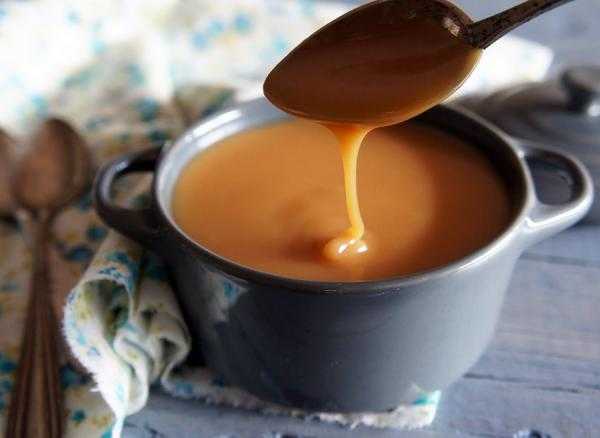

Dulce de leche

Al dulce de leche tambien se lo conoce como manjar de dulce en otros paises
de latinoamerica.
La receta del dulce de leche es una de las mas simples que hay,
lo mas importante que debes recordar es que nunca debes dejar de
revolver la preparacion cuando se encuentre en el fuego, pero afortunadamente
tengo un truco que te va a facilitar mucho esa tarea. El truco conciste en colocar
unas tres o cuatro canicas de vidrio en el fondo de la olla, esto hará que la
preparacion no se pegue en el fondo gracias a el movimiento de las canicas.
Receta
- 1lt de leche entera
- 300gr de azucar
- 1 vaina de vainilla
- 1cdta bicarbonato de sodio
- Introducir la leche en la olla con la vaina de vainilla y llevar a hervor.
- Una vez hervida la leche, bajar el fuego y agregar el azúcar.
- Cuando el azucar se halla disuelto agregar el bicarbonato.
- Ir removiendo la preparacion hasta que vaya tomando color y consistencia.
Al cabo de una hora y media o dos, veráz como ya tiene la consitencia caracteristica
del dulce de leche.
- Listo, ahora a guardarlo en frasco y a disfrutarlo como mas lo prefieras, para mi
nada mejor que en una rebanada de pan fresco unatado con manteca.